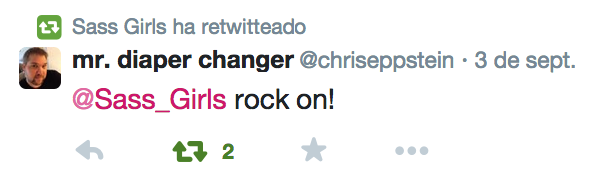

Are you sassy? You should
I am
Naiara Abaroa. UI designer/developer

Naiara Abaroa. UI designer/developer
$list-space: "item-1" "item-2" "item-3";
$list-comma: "item-1", "item-2", "item-3";
As for JavaScript or any other language, there is no limit regarding the level of depth you can have with nested lists. Just go as deep as you need to.
/* Nested lists with braces and same separator */
$list: (
("item-1.1", "item-1.2", "item-1.3"),
("item-2.1", "item-2.2", "item-2.3"),
("item-3.1", "item-3.2", "item-3.3")
);
/* Nested lists without braces using different separators to distinguish levels */
$list: "item-1.1" "item-1.2" "item-1.3",
"item-2.1" "item-2.2" "item-2.3",
"item-3.1" "item-3.2" "item-3.3";
nth($list, 0) -> throws error
nth($list, 1) -> "item-1"
Strings, numbers, boolean, whatever you can put in a variable. This means you’re fine to use some list functions even on things that don’t look like one.
$variable: "Sass is awesome";
length($variable) -> 1
Beware! If you remove the quotes around this string, it will be parsed as a 3 items long list (1: Sass; 2: is; 3: awesome). I recommand you quotes your strings to avoid some unpleasant surprises.
Some handy functions to work with lists: nth, append, join, and length
nth(1px 2px 10px, 2) -> 2px
append(1px 2px, 5px) -> (1px 2px 5px)
length(5px 10px) -> 2
@each $animal in puma, sea-slug, egret, salamander {
.#{$animal}-icon {
background-image: url('/images/#{$animal}.png');
}
}
/*output CSS*/
.puma-icon {
background-image: url('/images/puma.png'); }
.sea-slug-icon {
background-image: url('/images/sea-slug.png'); }
.egret-icon {
background-image: url('/images/egret.png'); }
.salamander-icon {
background-image: url('/images/salamander.png'); }
A mixin include can now accept a block of content. The style block will be passed to the mixin and can be placed at the point @content is used.
@mixin iphone {
@media only screen and (max-width: 480px) {
@content;
}
}
@include iphone {
body { color: red }
}
Produces
@media only screen and (max-width: 480px) {
body { color: red }
}
Sass supports a new, special type of selector called a "placeholder selector". These look like class and id selectors, except the # or . is replaced by %. They're meant to be used with the @extend directive, when you want to write styles to be extended but you don't want the base styles to appear in the CSS.
/*This ruleset won't be rendered on its own.*/
#context a%extreme {
color: blue;
font-weight: bold;
font-size: 2em;
}
.notice { @extend %extreme; }
/*Is compiled to:*/
#context a.notice {
color: blue;
font-weight: bold;
font-size: 2em;
}
When defining a mixin or function, you can add ... after the final argument to have it accept an unbounded number of arguments and package them into a list.
/* This is the same as "@include spacing(1, 2, 3);"*/
$values: 1, 2, 3;
@include spacing($values...);
#{} interpolation is now allowed in all plain CSS directives (such as @font-face, @keyframes, and of course @media). In addition, @media gets some special treatment. In addition to allowing #{} interpolation, expressions may be used directly in media feature queries. This means that you can write:
$media: screen;
$feature: -webkit-min-device-pixel-ratio;
$value: 1.5;
@media #{$media} and ($feature: $value) {
...
}
SassScript has a new data type: maps.
These are associations from SassScript values (often strings, but potentially any value) to other SassScript values. They look like this:
$map: (key1: value1, key2: value2, key3: value3);
Unlike lists, maps must always be surrounded by parentheses. () is now an empty map in addition to an empty list.
Maps will allow users to collect values into named groups and access those groups dynamically.
For example, you could use them to manage themes for your stylesheet:
$themes: (
mist: (
header: #DCFAC0,
text: #00968B,
border: #85C79C
),
spring: (
header: #F4FAC7,
text: #C2454E,
border: #FFB158
),
// ...
);
@mixin themed-header($theme-name) {
h1 {
color: map-get(map-get($themes, $theme-name), header);
}
}
Returns the value in the map associated with the given key. If no value is found, it returns null.
Merges two maps together into a new map. If there are any conflicts, the second map takes precedence, making this a good way to modify values in a map as well.
Returns a new map with a key removed.
Returns all the keys in a map as a comma-separated list.
Returns all the values in a map as a comma-separated list.
Returns whether or not a map contains a pair with the given key.
Maps can also be used with @each, using the new multiple assignment feature:
$primary-nav: (
padding-top: .2em,
margin-top: .2em,
line-height: 1.3,
);
@mixin print-styles($map){
@each $property, $value in $map {
#{$property}: $value;
}
}
.primary-nav {
@include print-styles($primary-nav);
}
/* Outputted CSS */
.primary-nav {
padding-top: .2em;
margin-top: .2em;
line-height: 1.3;
}

Sass now has the ability to generate standard JSON source maps of a format that is supported in most major browsers. These source maps tell the browser how to find the Sass styles that caused each CSS style to be generated.

Sass 3.3 adds the @at-root directive, which is a way to tell Sass to put a collection of rules at the top-level root of the document. The easiest way to use it is with a selector:
.badge {
@at-root {
.info { ... }
.header { ... }
}
}
/* Also produces */
.info { ... }
.header { ... }
By default, @at-root just excludes selectors. However, it's also possible to use @at-root to move outside of nested directives such as @media as well. For example:
@media print {
.page {
width: 8in;
@at-root (without: media) {
color: red;
}
}
}
/* Produces */
@media print {
.page {
width: 8in;
}
}
.page {
color: red;
}
Until now, the parent selector & has only been usable in selectors, but now it can be used in SassScript as well.
@mixin does-parent-exist {
@if & {
&:hover {
color: red;
}
} @else {
a {
color: red;
}
}
}
Complementing the ability to use & in SassScript, there's a new suite of functions that use Sass's powerful @extend infrastructure to allow users to manipulate selectors.
This feature is specifically targeted to framework developers.
.list {
@at-root #{selector-append(&, "--big", &, "--active")} {
color: red;
}
}
New tools make us change the way we work
var gulp = require('gulp');
var autoprefixer = require('gulp-autoprefixer');
gulp.task('default', function () {
return gulp.src('src/app.css')
.pipe(autoprefixer({
browsers: ['last 2 versions'],
cascade: false
}))
.pipe(gulp.dest('dist'));
});
var gulp = require('gulp');
var uncss = require('gulp-uncss');
gulp.task('simple', function() {
return gulp.src('site.css')
.pipe(uncss({
html: ['index.html', 'about.html']
}))
.pipe(gulp.dest('./out'));
});
LibSass is just a C/C++ library of the Sass engine.
https://www.youtube.com/user/sassbites
https://github.com/HugoGiraudel/awesome-sass
